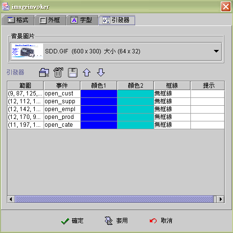
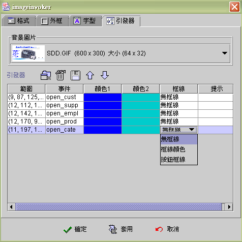
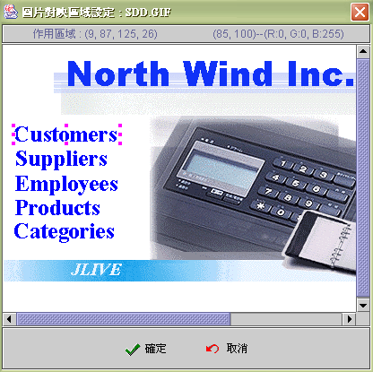
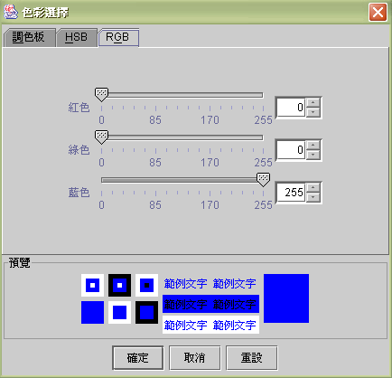

|

圖片引發器元件
(Image invoker component)
共同屬性 (common properties)
引發器屬性 (invoker properties)
圖片對映區域設定 (invoker region
setting)
運算式屬性存取 (formula get/set
properties)
圖片引發器元件
(Image invoker component) 是以圖片的不同範圍啟動事件 (fire event)。當使用者以滑鼠移入範圍時，設計師可以設定各個範圍的顏色變化
(由顏色1 至 顏色2 )，及提示文字 (tips)。使用者按下滑鼠
(clicked)時即啟動事件。如果採用jLIVE™
授權機制，作用範圍連結的事件為開啟視窗事件 (open form)
、執行印表作業事件 (report job) 、查詢資料來源事件 (query data
source) 時，皆會根據使用者是否擁有相關授權項目 (IUDQP)，而使該區域致能
(enabled) 或失效 (disabled)。
引發器 (Invoker properties)


圖片對映區域設定 (invoker region
setting)
新增一個引發器或以滑鼠雙擊範圍的儲存格，
會開啟圖片對映區域設定視窗。設計師可以滑鼠拖曳，設定引發器的作用範圍，同時工作視窗會顯示作用區域的大小及滑鼠所在位置的顏色值。
-
工作畫面解說：

範例 (example)
：
-
以滑鼠圈選涵蓋 Customers
字樣的區域；移動滑鼠到藍色的字；檢視(R, G, B)的值為(0, 0, 255)；按下
確定；回到屬性設定頁。
-
在引發器中選擇一個觸發事件 (event )。
-
點選顏色1 (color 1) 設定其 RGB 值為 (0, 0, 255) 。

-
點選顏色2 (color 2) 設定當滑鼠移至時的顏色值為另一顏色
RGB ( 153, 204, 255 ) 。
-
應用程式執行時，當滑鼠移至作用區域時，Customers
的藍色 RGB(0, 0, 255) 字樣，會變為水藍色 RGB( 153, 204, 255)
，滑鼠在作用區按下時 (clicked)，即會引發設定的事件 (event )。
▲Top
運算式屬性存取
(formula get/set properties)
SetProp("元件名稱",
"屬性", 值) ：屬性設定。
SetProp("元件名稱",
"屬性", 值1, 值2)：屬性設定。
GetProp("元件名稱",
"屬性")：屬性讀取。
| Set
Properties |
| 屬性
(Properties) |
值1
(Value 1) |
值2
(Value 2) |
說明 (Descriptions) |
| enabled |
1 致能，0 失效 |
|
致能與失效。 |
| enabledat |
N 第 N 區，由 1 起算 |
1 致能，0 失效 |
致能與失效。第 N 區為設計時的次序。 |
| setfocus |
1 設定 Focus |
|
設定 Focus。 |
| visible |
1 顯示，0 隱藏 |
|
顯示與隱藏。 |
| repaint |
1 重繪，2
立即重繪 |
|
重繪。 |
| revalidate |
1 |
|
元件重整。 |
| x |
正整數值 |
|
左座標位置。 |
| y |
正整數值 |
|
上座標位置。 |
| w |
正整數值 |
|
元件寬度。 |
| h |
正整數值 |
|
元件高度。 |
| xy |
正整數值 |
正整數值 |
左(Value1) 上(Value2) 座標位置。 |
| wh |
正整數值 |
正整數值 |
元件寬(Value1) 高(value2)度。 |
| Get
Properties |
| 屬性
(Properties) |
傳回值
(Return value) |
說明 (Descriptions) |
| isenabled |
1 致能，0 失效 |
致能與失效。 |
| isvisible |
1 顯示，0 隱藏 |
顯示與隱藏。 |
| x |
整數值 |
左座標位置。 |
| y |
整數值 |
上座標位置。 |
| w |
整數值 |
元件寬度。 |
| h |
整數值 |
元件高度。 |
▲Top
Copyright © 2001~
2004 Probe Technology . All Rights Reserved.
Questions, comments,
and suggestions to Service@probe.com.tw
|